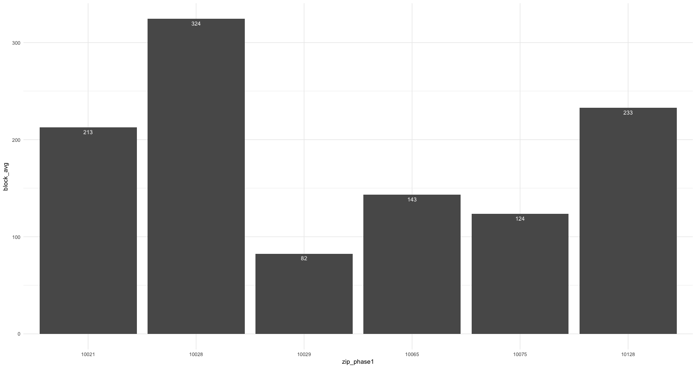
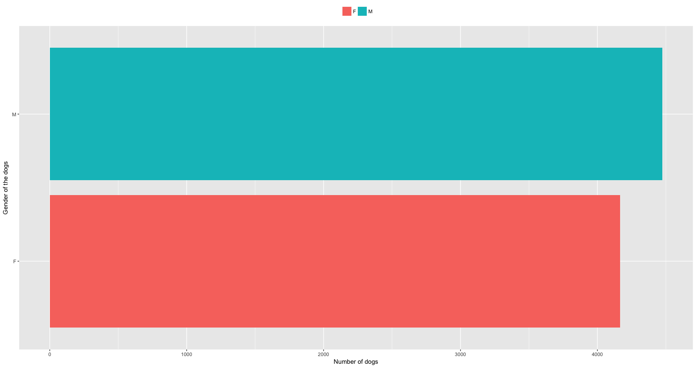
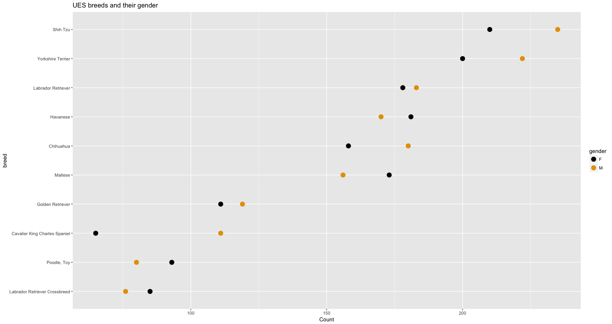
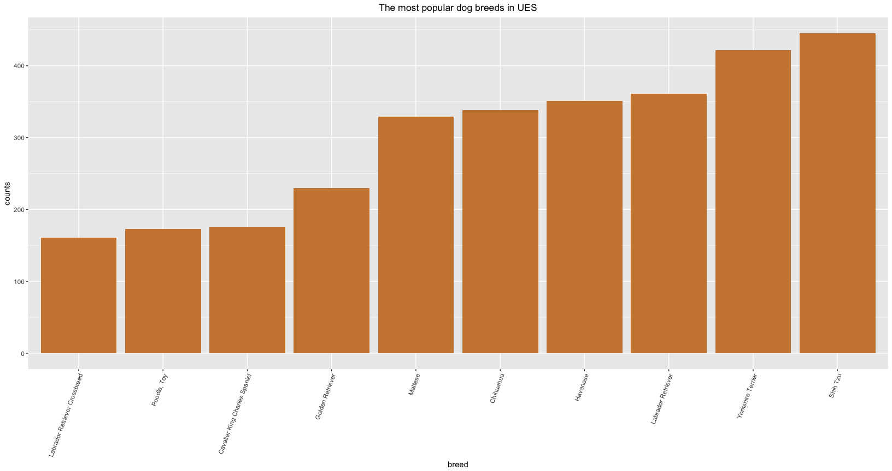

In order to understand how adding a new subway line influences the nearby community, we looked from both economic and social perspective. To measure economical influence, we looked at two data sets: Department of Building permit issuances, and Real Estate prices (Sharon plz edit the correct /formal name). In addition to the economical impact, we explored the social perspective by looking at NYC Dog licensing Dataset, to gain insights about their owners â the upper east side residents.
We first looked at the zip codes in Manhattan. ZipCode map: https://github.com/blooraspberry/subwayproject/blob/master/visualization/NYC-Zip-Code-Map.jpg
{kind=link}
Since the Q line (phase 1) starts at 63rd street and ends at 96th street, we focused on the areas with zip codes along the line, which are “10065”, “10021”, “10075”, “10028”, “10128”, “10029”. We stopped at 117th street because it is 20 blocks away from the last stop at Q line (phase 1) and we think the impact of the subway attenuates.
We accessed our data set from New York City Public data: https://data.cityofnewyork.us/Health/NYC-Dog-Licensing-Dataset/nu7n-tubp
It contains 121,949 observations of 15 variables.
library(tidyverse)
library(forcats)
library(ggplot2)
library(ggthemes)
path <- "/Users/sharontsao/Desktop/deibyrios.github.io/Dogs.csv"
dogs <- read.csv(path, 1)
head(dogs)## RowNumber AnimalName AnimalGender AnimalBirthMonth BreedName
## 1 1753 SHADOW M 01/01/2000 12:00:00 AM Beagle
## 2 2415 ROCCO M 10/01/2011 12:00:00 AM Boxer
## 3 3328 LUIGI M 09/01/2005 12:00:00 AM Maltese
## 4 7537 PETUNIA F 08/01/2013 12:00:00 AM Pug
## 5 8487 ROMEO M 10/01/2008 12:00:00 AM Maltese
## 6 10503 BRANDY M 01/01/2004 12:00:00 AM Unknown
## Borough ZipCode CommunityDistrict CensusTract2010 NTA
## 1 Brooklyn 11236 318 1014 BK50
## 2 Brooklyn 11210 314 756 BK43
## 3 Bronx 10464 210 516 BX10
## 4 Brooklyn 11221 304 419 BK78
## 5 Bronx 10451 201 65 BX34
## 6 Brooklyn 11225 309 800 BK60
## CityCouncilDistrict CongressionalDistrict StateSenatorialDistrict
## 1 46 8 19
## 2 45 9 17
## 3 13 14 34
## 4 34 7 18
## 5 17 15 32
## 6 40 9 20
## LicenseIssuedDate LicenseExpiredDate
## 1 12/29/2014 01/30/2016
## 2 01/07/2015 01/30/2016
## 3 01/17/2015 02/02/2016
## 4 03/01/2015 03/28/2016
## 5 03/09/2015 03/09/2016
## 6 03/27/2015 03/29/2016The first thing we are curious to find out is that if there are any noticeable differences that how dog population is distributed across different zip codes in the Upper East Side neighborhood. We shortened some variable names for simplicity and filtered the dataset by the target upper east side zipcodes with a selection of our preferred variables. We found that some zipcodes have significantly more dogs than the others and looked into why. Very quickly we noticed that each zipcode can cover different numbers of blocks. Therefore, instead of comparing the dogs population by zipcodes, we find it more reasonable to compare the average number of dogs by block within a given zipcode. We found out that, zipcode 10028, which covers streets from 81 to 86th street has the highest number of dogs per block.
# simplify varible names
colnames(dogs)[colnames(dogs) == 'AnimalName'] <- 'name'
colnames(dogs)[colnames(dogs) == 'AnimalGender'] <- 'gender'
colnames(dogs)[colnames(dogs) == 'BreedName'] <- 'breed'
# the geographic dynamics
# Q line phase 1 impact areas:
# 97 - 116 st: 10029 # of blocks: 19
# 87 - 96 st: 10128
# 81 - 86 st: 10028 # 5 most dogs
# 61 - 80 st: 10021 (7), 10065 (7), 10075 (7)
zip_blocks <- tibble(ZipCode = c(10065,10021, 10075, 10028,10128 ,10029), nBlocks = c(7, 7, 7, 5, 9, 19))
phase1 <- c("10065","10021", "10075", "10028","10128" ,"10029" )
#subsetting df to phase1 area
dogs1 <- subset(dogs, dogs$ZipCode %in% phase1, select = c("Borough", "ZipCode", "breed", "gender","LicenseIssuedDate", "LicenseExpiredDate"))
#zip_phase1 <- factor(dogs2$ZipCode)
#%>% left_join(zip_blocks, by = "ZipCode") %>% group_by(ZipCode) %>% summarize(block_avg=n()/max(nBlocks))
dogs2 <- dogs1 %>% group_by(ZipCode) %>% summarize(block_cnt=n()) %>% left_join(zip_blocks, by = "ZipCode") %>% mutate(block_avg = block_cnt/nBlocks)
zip_phase1 <- factor(dogs2$ZipCode)
ggplot(dogs2, aes(x = zip_phase1, y = block_avg)) + geom_bar(stat="identity") +
geom_text(aes(label = round(block_avg, digits = 0)), vjust = 1.6, color = "white", size = 3.5) + theme_minimal() + scale_color_colorblind()
As the living space by and large is limited in the city, we are curious to see what the popular dog breeds are in Upper East Side and whether the breeds echo with certain aspects of the real estate landscape of this neighborhood. We excluded the âunknownâ breeds for a more specific understanding, even though the âunknownâ breeds are of a significantly higher quantity. We find out that from a gender perspective, female dogs and male dogs are at around the same quantity, male dogs holding a small lead.
# cleaning: drop empty levels "" and " "
dogs1$gender[dogs1$gender == ""] <- "F"
dogs1$gender[dogs1$gender == " "] <- "M"
dogs1$gender <- droplevels(dogs1$gender)
# the gender difference of dogs
ggplot(dogs1, aes(x = dogs1$gender, fill = factor(dogs1$gender))) +
ylab("Number of dogs") +
xlab("Gender of the dogs") +
geom_bar() + coord_flip() +
theme(legend.position = "top") +
theme(legend.title=element_blank()) +
scale_color_colorblind()
This gender preference is mostly consistent across different breeds, with an exception of Maltese, Havanese, and Toy Poodle and Labrador crossbreed, in which breeds female dogs outnumbered their male counterparts by a small margin.
ues_dogs <- dogs1 %>% filter(ZipCode %in% phase1)
ues_dogs_counts <- ues_dogs %>% group_by(breed) %>% summarize(countBreed = n()) %>% arrange(-countBreed)
top_10_dogs <- ues_dogs_counts$breed[2:11]
ues_dogs_gender<- ues_dogs %>% filter(breed %in% top_10_dogs) %>% group_by(breed, gender) %>% summarize(countGender = n()) %>% select(c(breed, gender, countGender))
ues_dogs_sorted_gender <- ues_dogs_gender %>% group_by(breed) %>% mutate(countBreed = sum(countGender)) %>% ungroup %>% arrange(-countBreed)
ues_dogs_sorted_gender$breed <- fct_rev(factor(ues_dogs_sorted_gender$breed, levels=unique(ues_dogs_sorted_gender$breed)))
ggplot(ues_dogs_sorted_gender, aes(countGender, breed)) +
geom_point(aes(color = gender), size = 4) + scale_color_colorblind() +
ggtitle("UES breeds and their gender") +
xlab("Count")
In terms of sizes, smaller dogs are unsurprisingly popular, with Shih Tzu and Yorkshire Terrier of leading quantities over 400. Out of ten most popular dog breeds in Upper East Side, only three breeds of medium to large size made to the list, which are Labrador Retriever, Golden Retriever, and Labrador Retriever Crossbreed. (This is understandable considering the real estate prices in this neighborhood. ??)
#{r pressure, echo=FALSE}
dogs1_breed <- dogs1 %>% group_by(dogs1$breed) %>% summarize(counts = n()) %>% arrange(-counts)
# top 10 known breeds
top10 <- dogs1_breed[2:11,]
names(top10) <- c("breed", "counts")
# ordering the breeds by counts
top10$breed <- factor(top10$breed, levels = top10$breed[order(top10$counts)])
ggplot(top10, aes(x=breed, y=counts)) +
geom_col(fill = "tan3") +
theme(axis.text.x=element_text(angle= 70, hjust=1)) +
theme(plot.title = element_text(hjust = 0.5)) +
ggtitle("The most popular dog breeds in UES")
To understand how adding a new subway line may have influenced the neighborhood, we picked Upper West Side and compared how the dog registrations differ over the period of 2014 to 2016. We selected Upper West Side because it is a neighborhood similar to Upper East Side in many regards. They are both uptown, both are close to central park, and both are preferable residential choices for many. However, since there is no subway construction addition planned for Upper West Side, comparing it with Q line covered Upper East Side can help us gain some insights. We grouped all the registrations in these two neighborhoods and plotted over the years. It is quite obvious that both neighborhoods started at similar registration amounts, while the number in Upper East Side grew much faster than Upper West Side. It has 1000 more dogs than Upper West Side in 2015 and almost 1400 more by 2016. It is inconclusive that the subway addition is a main drive for this difference, yet it is a considerable factor that may have contributed to this result.
# compare the dog registartions before and after the subway was built for the three neighborhoods with subways
# UES - areas that have subway
ues <- c("10065","10021", "10075", "10028","10128" ,"10029" )
#morning side heights
morHeights <- c("10024", "10025", "10027")
total_area = c(ues, morHeights)
test <- dogs %>% filter(dogs$ZipCode %in% total_area) %>% mutate(year = substring(LicenseIssuedDate,7,10))
#test %>% group_by(test$year) %>% summarize(count = n()) %>% arrange(-count)
ues_uws<- test %>% mutate(neighborhood = ifelse(ZipCode %in% morHeights, "Morningside Heights", "Upper East Side"))
ues_uws$neighborhood <- factor(ues_uws$neighborhood)
ues_uws$year <- factor(ues_uws$year)
ggplot(ues_uws, aes( year, fill = neighborhood)) + geom_bar(position = "dodge")+
theme(plot.title = element_text(hjust = 0.5)) +
theme(legend.title = element_blank()) +
ggtitle("Dogs population: UWS VS UES")